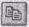

Лабораторна робота № 4#
Тема#
MS Windows. Програми Провідник і Total Commander.
Мета#
Уміти користуватися програмами Провідник (Explorer) і Total Commander для огляду файлової структури, запуску програм; виконувати дій з файлами, папками та їхніми групами.
Хід роботи#
Запустіть програму Провідник. Увімкніть, якщо треба, панель інструментів командами Вигляд Панель інструментів.
Перегляньте дерево папок, знайдіть і відкрийте «Мій комп’ютер», диск С:, папку Temp.
Перегляньте дерево, щоб знайти і відкрити папку «Недавні і документи» у Windows ХР або «Документи» у Windows 9х.
Виберіть чотири будь-які піктограми з цієї чи іншої студентської папки і скопіюйте їх у власну папку способом перетягування піктограм. Для цього спочатку утворіть групу з піктограм, на дереві папок клацніть на значку « + » поряд з папкою групи, перетягніть групу на піктограму власної папки, утримуючи праву клавішу миші. Відпустіть клавішу і виберіть з меню команду Копіювати.
Скопіюйте ще дві піктограми з папки «Недавні документи» чи іншої папки у власну папку, використовуючи буфер обміну. Виберіть файли у папці і скопіюйте їх у буфер обміну засобами меню програми Провідник (пункт Копіювати) або панелі інструментів (кнопка ). На дереві папок клацніть правою клавішею миші на назві особистої папки (можете її відкрити, а можете і не відкривати) і вставте в неї вміст буфера обміну командою меню Вставити (або за допомогою кнопки
 ). Який із способів
(перетягування піктограм чи використання буфера обміну) вам більше
до вподоби (зручніший)?
). Який із способів
(перетягування піктограм чи використання буфера обміну) вам більше
до вподоби (зручніший)?Упорядкуйте назви піктограм у власній папці в алфавітному порядку. Для цього праве вікно має функціонувати в режимі Таблиця ( його задаємо в пункті ВИГЛЯД ), а для впорядкування потрібно клацнути мишею на заголовку таблиці Назва (Name).
Упорядкуйте назви файлів в особистій папці за обсягом ( Size ), а потім за датою останніх змін (Date).
Створіть у власній папці таку структуру папок:
Власна
|_______Провідник
| |_____А1
| |_____А2
|________Командир
|_____В1
|____В2
Перемістіть піктограми лише файлів і ярликів із власної папки у папку А1.
Запустіть програму Total Commander. Для запуску програми двічі клацніть на її ярлику. У безплатній демоверсії програми вимагається додатково клацнути на одній з трьох кнопок для запуску програми. Яке вікно (ліве чи праве) у ТС тепер є активним, а яке — пасивним? Увага! Якщо вивчення програми ТС не передбачається, то пункти 16—19 виконайте засобами програми Провідник.
Активізуйте інше вікно. Сусіднє вікно активізуйте клавішею Tab. Скористайтеся смугою прокручування, щоб переглянути вміст активної папки.
Увімкніть російськомовний чи україномовний інтерфейс програми. Конфігурація \(\, \Rightarrow\,\) Параметри \(\, \Rightarrow\,\) Мови \(\, \Rightarrow\,\) виберіть мову з меню.
Дослідіть кнопки панелі інструментів ТС. Наведіть вказівник миші на кнопки панелі інструментів, зачекайте мить до появи пояснень призначення кнопки.
Дослідіть кнопки панелі інструментів Повно, Коротко. Натисніть на них і спостерігайте за змінами подання інформації в активному вікні власної папки.
Дослідіть кнопки панелі інструментів для впорядкування файлів За іменем, За розширенням, За обсягом, За датою. Натисніть на них і спостерігайте за змінами розташування назв піктограм у вікні.
Створіть у власній папці папку з назвою Звіт4. Активізуйте в одному з вікон робочий диск, знайдіть і відкрийте власну папку. Для створення нової папки натисніть на клавішу F7 на клавіатурі чи клацніть на її кнопці (F7 СоздДир) у вікні. Введіть назву Звіт4 і натисніть на кнопку ОК.
Знайдіть і відкрийте папку А1 і скопіюйте її вміст у папку Звіт4. Спочатку у сусідньому вікні відкрийте папку Звіт4. Файли в А1 виокремлюють клацанням миші з натисненою клавішею Ctrl або клавішею Insert. Копіювання — F5.
Перемістіть вміст А1 в В2. Переміщення — F6.
У папці Звіт4 створіть ще текстовий документ, давши йому назву Звіт, з текстом-відповіддю на одне будь-яке контрольне запитання. Спочатку активізуйте папку Звіт4, виконайте Shift + F4 для виклику редактора Notepad вперше. Набравши текст, не забудьте закрити вікно текстового документа зі збереженням.
Заархівуйте файли у папці Звіт4 одним із доступних програмі ТС архіваторів. Спочатку файли об’єднайте у групу. Архів помістіть у папці Звіт4. Архів— це файл, в який у стисненому вигляді поміщають інші файли. Детальніше архіви вивчатимемо в роботі № 5. Варто, щоб у сусідньому вікні була відкрита та ж сама папка Звіт4. У цьому разі архів поміщатиметься сюди автоматично. Виберіть групу файлів \(\, \Rightarrow\,\) Файли \(\, \Rightarrow\,\) Архівувати (pack) файли \(\, \Rightarrow\,\) виберіть архіватор Zip, Rar тощо \(\, \Rightarrow\,\) Змініть назву архіву із зазначенням шляху або погодьтеся з тою, що запропонує програма у діалоговому вікні, якщо папка Звіт4 була відкрита заздалегідь \(\, \Rightarrow\,\) ОК.
Відшукайте файл-архів (візуально, за іменем чи датою створення) і перемістіть його у власну папку.
Розархівуйте архів у власну папку. Корисно, щоб в обох вікнах була відкрита власна папка. Виберіть файл-архів \(\, \Rightarrow\,\) Файли \(\, \Rightarrow\,\) Розархівувати ( unpack ) файли \(\, \Rightarrow\,\) Зазначте шлях до власної папки, наприклад D:\ME-15\Прізвище, або погодьтеся з тим, що запропонує програма \(\, \Rightarrow\,\) ОК.
Вилучіть файл-архів. Виберіть назву файлу і натисніть клавішу Delete або F8.
Запустіть програму Провідник і продемонструйте викладачеві структуру і вміст власної папки.
Після закінчення роботи закрийте всі вікна.
Висновки#
Програма Провідник – це найзручніший засіб виконання дій над папками та файлами, зокрема, методом перетягування піктограм з правого вікна на піктограму папки у лівому вікні.
Програма Total Commander - це аналог відомої віддавна програми Norton Commander (NC). Вона стане у пригоді тим, хто має досвід роботи з NC, або тим, кому до вподоби робота з двовіконним інтерфейсом.
З набуттям практичних навичок роботи в Windows поступово переходьте до постійного користування програмою Провідник.
Якщо хід роботи виконано правильно, власна папка повинна містити набір піктограм, папку Звіт4 з набором піктограм, папки Провідник, Командир. Папка Провідник має містити порожні папки А1 і А2, а папка Командир — порожню папку В1 і папку В2 з набором піктограм.
Контрольні запитання#
Яке призначення програми Провідник?
Як запустити програму Провідник?
З чого складається вікно програми Провідник?
Яке призначення дерева об’єктів? Як відшукати папку?
Що означають символи « + » і « - » перед назвою папки?
Які є способи виконання дій з об’єктами?
Як розкрити папку? Як відкрити вікно ще одної папки?
Що таке група об’єктів і як об’єкт долучити до групи?
Як переміщувати об’єкти засобами Провідника?
Як об’єднати у групу всі об’єкти?
Як виконати копіювання засобами програми Провідник?
Яке призначення програми Total Commander?
Як об’єднати в групу об’єкти від першого до заданого?
Яке призначення клавіші F3 у програмі ТС?
Яке призначення клавіші F4 у програмі ТС?
Яке призначення клавіші F5 у програмі ТС?
Яке призначення клавіші F6 у програмі ТС?
Яке призначення клавіші F7 у програмі ТС?
Яке призначення клавіші F8 у програмі ТС?
Як упорядкувати піктограми засобами програми Провідник?
Як активізувати сусіднє вікно в ТС?
Як переглянути текстовий файл у ТС?
Як створити текстовий документ у ТС?
Як відредагувати текстовий документ у ТС?
Як виконати копіювання у ТС?
Як виконати переміщення у ТС?
Як створити папку в ТС?
Як вилучити об’єкт у ТС?
Як запустити програму ТС?
Як поміняти мовний інтерфейс у програмі ТС?
Яке призначення комбінації клавіш Shift+F4 у ТС?
Які кнопки є на панелі інструментів вікна програми ТС?
Що спільного є між програмами Провідник і ТС?
Яка відмінність між програмами Провідник і ТС?